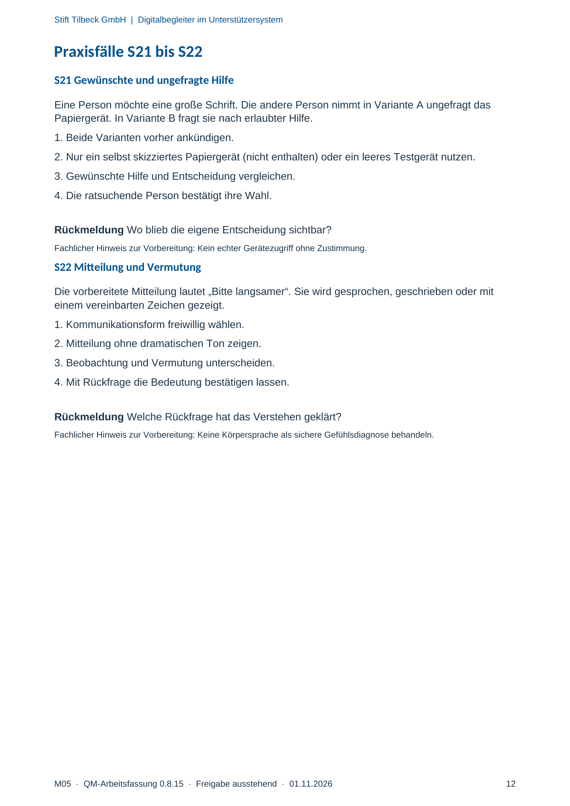

M05 · Originalseite 12
Mitteilung und Vermutung
Original-Druckseite mit S22. Auf derselben Seite stehen außerdem S21. Diese sind dadurch keine zusätzliche Aufgabe.
Fragen und Ankreuzfelder werden auf dem Ausdruck bearbeitet. Die Lesefassung speichert keine Antworten.
Lesefassung · Seite 12
Stift Tilbeck GmbH | Digitalbegleiter im Unterstützersystem
M05 · QM-Arbeitsfassung 0.8.15 · Freigabe ausstehend · 01.11.2026 12
Praxisfälle S21 bis S22
S21 Gewünschte und ungefragte Hilfe
Eine Person möchte eine große Schrift. Die andere Person nimmt in Variante A ungefragt das
Papiergerät. In Variante B fragt sie nach erlaubter Hilfe.
1. Beide Varianten vorher ankündigen.
2. Nur ein selbst skizziertes Papiergerät (nicht enthalten) oder ein leeres Testgerät nutzen.
3. Gewünschte Hilfe und Entscheidung vergleichen.
4. Die ratsuchende Person bestätigt ihre Wahl.
Rückmeldung Wo blieb die eigene Entscheidung sichtbar?
Fachlicher Hinweis zur Vorbereitung: Kein echter Gerätezugriff ohne Zustimmung.
S22 Mitteilung und Vermutung
Die vorbereitete Mitteilung lautet „Bitte langsamer“. Sie wird gesprochen, geschrieben oder mit
einem vereinbarten Zeichen gezeigt.
1. Kommunikationsform freiwillig wählen.
2. Mitteilung ohne dramatischen Ton zeigen.
3. Beobachtung und Vermutung unterscheiden.
4. Mit Rückfrage die Bedeutung bestätigen lassen.
Rückmeldung Welche Rückfrage hat das Verstehen geklärt?
Fachlicher Hinweis zur Vorbereitung: Keine Körpersprache als sichere Gefühlsdiagnose behandeln.
Originalseite ansehen
